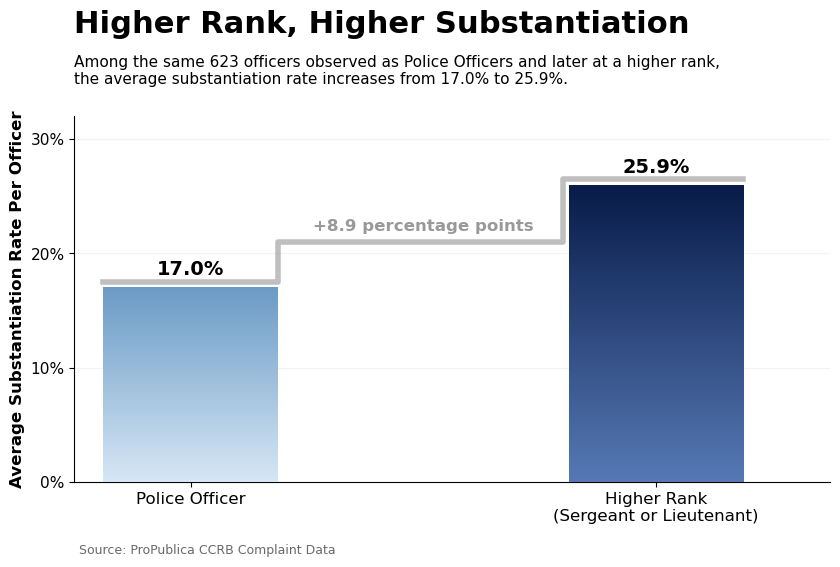

Proposition: Higher-ranking NYPD officers tended to have lower substantiation rates than lower-ranking officers in civilian allegations of misconduct.
FOR the Proposition
Design Decisions and Rationale:
- Ladder and color scheme (Score: -1): A ladder is used to symbolize the hierarchy of NYPD ranks and reinforce the relationship between rank and substantiation rates. The ladder may have viewers interpret increasing rank as the reason substantiation rates decrease, but our analysis does not establish causation. The color scheme was chosen to match the NYPD colors, making the visualization more relevant to its subject. We considered including the badge symbols to represent the ranks, but decided not to because people outside the NYPD might not recognize them.
- Horizontal bar chart (Score: -1.5): A horizontal bar graph is used to compare average substantiation rates of individuals at each NYPD rank. The x-axis starts at 15% instead of 0%, a choice we made to make the differences in substantiation rates across ranks appear larger as a visual argument for the proposition. However, this decision risks exaggerating the differences.
- Selecting three ranks (Score: -2): We selected Police Officer, Sergeant, and Lieutenant from the eight rank categories in the dataset. These three ranks show a clear decrease in average substantiation rates as rank increases. However, including the other ranks would make this pattern less consistent and the claim less convincing. This is a visual simplification that makes the comparison between ranks easier to understand, but excluding all other ranks limits the information shown to the viewer.
- Overlapping groups (Score: -1): We calculated each individual’s substantiation rate at each rank and then averaged those rates within each rank. However, these groups can overlap because the same individual may receive allegations at multiple ranks, while each group also contains different individuals. This makes the comparison persuasive but may encourage viewers to think that rank is the cause of lower substantiation rates when the differences could partly reflect which officers are included in each group.
- Conclusion-based title (Score: -1): The title “Higher Rank, Lower Substantiation” directly tells viewers what conclusion to take from the visualization with little room for interpretation. This makes the argument more persuasive by making the decrease in substantiation rates across ranks seem like a clear pattern.
AGAINST the Proposition

Design Decisions and Rationale:
- Staircase and color scheme (Score: -1): Lighter and darker shades of blue are used to represent the magnitude of substantiation: the higher the substantiation percentage, the darker the shade. Similar to the “FOR” visualization, the blue matches the NYPD colors. This staircase-like design and text annotations (+8.9 pp) emphasize the increase in substantiation rates as individuals move to higher ranks. However, this design may suggest that promotions cause substantiation rates to increase, but our analysis does not establish causation.
- Selecting the same individuals (Score: -2): We selected a subset of individuals who received allegations both as Police Officers and later at higher ranks. This allows us to specifically look at the overlap between rank groups and to compare substantiation rates across ranks for the same people. Comparing the same people also makes the increase in substantiation rates seem more associated with moving up in rank. However, this restriction might introduce bias, and the subset may not be representative of all individuals at those ranks.
- Combining higher-ranking groups (Score: -1.5): We combined higher-ranking individuals into one group to simplify the comparison across ranks and highlight the overall increase in substantiation rates. However, this decision hides differences between subgroups. The increase is mainly driven by individuals who received allegations as both Police Officers and Sergeants, while the other combinations (Police Officer + Lieutenant and Police Officer + Sergeant + Lieutenant) show little to no increase. By combining these groups, our visualization makes the upward trend appear clearer.
- Conclusion-based title (Score: -1): Similarly to the “FOR” visualization, the title “Higher Rank, Higher Substantiation” states the conclusion rather than allowing viewers to interpret the relationship themselves. Moreover, the title makes the increase sound like a general pattern across ranks, even though in our analysis, we restricted the population to only include the individuals who received allegations at multiple ranks.
Final Reflection
Throughout the design process, we explored how a dataset could be used to support two opposing arguments about the relationship between NYPD officer rank and substantiation rates. We went through multiple rounds of implementation and made different decisions about how to calculate substantiation rates based on officer rank and groupings. We made several deceptive choices so that our For visualization emphasized the decreasing rates as rank increased, while our Against visualization focused on a subset of officers whose substantiation rates increased at higher ranks. This showed us how data selection and visualization design can influence the conclusions readers draw from the same dataset. We were surprised by how the same dataset could produce two convincing but opposite patterns.
We ran into some difficulties during the design process. One challenge we encountered was dealing with officers who received allegations at multiple ranks. Because an officer could appear in more than one rank group due to promotions, the groups could overlap, even though the visualizations could make them appear separate. This made it difficult to determine whether differences in substantiation rates were associated with rank itself or with the particular officers included in each group. For example, an officer with a high substantiation rate who remains a police officer only contributes to the police officer group, while an officer with a low substantiation rate who later becomes a sergeant may contribute to both groups. For our opposing visualization, we focused on officers who received allegations at multiple ranks, allowing us to compare rates across ranks for the same individuals. However, this also leaves out officers who only received allegations at one rank, potentially introducing selection bias.
This project helped us understand how visualization choices can make an argument more persuasive but can also mislead readers. For example, our For visualization used a shortened x-axis to highlight the differences between ranks, while our Against visualization combined higher-ranking officers into one group to simplify the comparison. Although these choices helped support our intended arguments, they could also exaggerate differences or leave out important details. We think persuasive choices become misleading when they encourage viewers to draw conclusions that are not supported by the analysis. Before this project, we mainly viewed data visualizations as a way to present findings, but this project showed us how easily design decisions can manipulate the audience's view because a visualization can be misleading depending on how the information is presented. This made us more aware of the ethical responsibility of creating transparent visualizations and being critical of the graphs we encounter.